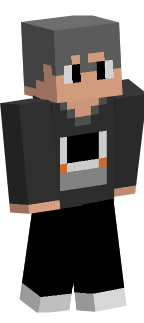

運営メンバー
STAFF MEMBERS
波急サーバーを運営しているメンバーを紹介します。
各メンバーのスキン画像や役職、紹介文を掲載しています。
kou20230831
オーナーコウミン
波急サーバーのオーナーです。 波急区間の管理やサーバー全体運営管理やアドオン製作、サイト制作を担当しています。
Primeactor79704
デベロッパープライム
波急サーバーのデベロッパーです。 川鉄区間の管理やワールド内のメロディー作成をしています。
StarBard173641
デベロッパーゆうず
波急サーバーのデベロッパーです。 主に矢野電区間の管理や一部のアドオン製作をしています。

Naginagi151229
モデレーターナギ
波急サーバーのモデレーターです。 サーバー内の建築や参加者対応をしています。
rossiyuki66
休職中現在現実多忙のため休職中。